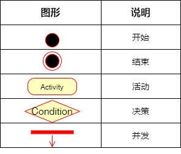

UML活动图与BPMN流程图的区别
寄蜉蝣于天地，渺沧海之一粟。哀吾生之须臾，羡长江之无穷。
定义与目的
定义：
- 活动图【UML】：一种特殊的流程图【BPMN】，用来描述对象（系统或人）逐步的活动和操作，支持分支、迭代和并发。
- 流程图【BPMN】：说明给定问题的解决方案模型的图形表示。
目的:
- 活动图：帮助公司业务与开发团队了解系统的流程和行为。
- 流程图：帮助公司成员沟通并了解问题的解决方案。
流程图图标详解
| 图形 | 说明 |
|---|---|
| 椭圆形 | 开始、结束 |
| 矩形 | 操作、过程 |
| 菱形 | 输入或输出 |
活动图图标详解

| 图形 | 说明 |
|---|---|
| 右上卷角矩形 | 活动前置或后置约束条件 |
- 活动名称必须以动词开始
- 可以在转移箭头上用[]标示转移条件
用例图与活动图的关系
用例图是活动图的基础，先画出用例图并写出用例规约，然后才能根据用例规约画出对应的活动图、状态图、泳道图。
用例规约
表1: 登录用例规约
| 用例编号 | UC01 | 备注 |
|---|---|---|
| 用例名称 | 登录 | |
| 前置条件 | 可选 | |
| 后置条件 | 学生进入教务系统首页 | 可选 |
| 基本流程 | 1. 学生点击登录链接； | 用例执行成功的步骤 |
| ~ | 2. 系统显示登录页面； | |
| ~ | 3. 学生输入用户名和密码，点击登录按钮； | |
| ~ | 4. 系统查询到用户信息，检查用户名与密码相匹配，记录用户登录状态； | |
| ~ | 5. 系统显示首页。 | |
| 扩展流程 | 4.1 系统检查发现用户不存在，提示“用户不存在”； | 用例执行失败 |
| ~ | 4.2 系统检查发现用户名与密码不匹配，提示“密码不正确”。 |
总结
| 活动图 | 流程图 | |
|---|---|---|
| 定义 | 支持选择、迭代和并发的逐步活动和操作的工作流的图形表示。 | 一种图解表示，它说明给定问题的解决方案模型。 |
| 用途 | 对系统建模，有助于了解系统或工作的流程。 | 对业务流程进行建模，有助于分析和设计程序。 |
| 关联 | 与UML相关联 | 与BPMN相关联 |
参考
https://pediaa.com/what-is-the-difference-between-activity-diagram-and-flowchart/